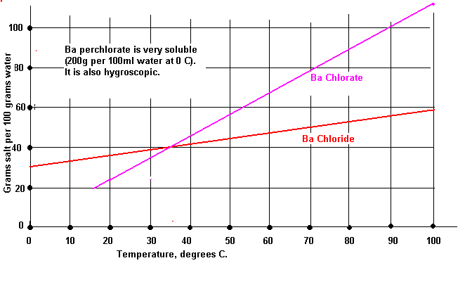

Next - Barium surprisingly has essentially the same radius as Potassium. According to CRC, Crystal Ionic Radii, 59'th Ed, page F-213, the radii of Barium 2+ and Potassium + are 1.34 Ang, and 1.33 Ang respectively. (Why? There are two charges on the Ba, which means that the counterion is more strongly attracted, and quantum mechanical theory shows that when low lying d-orbitals are available there may be a surprising amount of electron density and back bonding in those orbitals, thus creating an anisotropic opportunity for unusually close approach). So, the difference in the crystal lattice stability cannot be ascribed to the difference in size (aka... "larger").
Then we get to the greater conundrum... heats of formation. Barium Chlorate is actually MORE stable than Potassium Chlorate, as regards formation from the elements. The heat of formation of Ba(ClO3)2 is -184.4 kcal/mol, while Potassium Chlorate is only -95.1 kcal/mol. However, the heat of decomposition as measured to stable products is much better for Ba(ClO3)2 at -28 kcal/mol, while it is only -10.6 kcal/mole for KClO3. How can this be? It's due to the fact that the products of decomposition are MUCH more stable in the Barium case than in the Potassium case. This means that more heat is released when Barium Chlorate decomposes. Thus, a small initial reaction returns more heat to the surrounding composition, thus more easily creating a runaway reaction.
There is a process for making very pure Barium Chloride (dihydrate)
here from pottery grade Barium Carbonate.
Barium chlorate is used for making vivid green colour in pyrotechnics.
If you make it by double decomposition with Barium chloride and Sodium chlorate it will be difficult to remove all of the sodium ion from the product and the yellow colour that sodium gives will effect the vivid green colour that you desired. Some have suggested using Calcium chlorate instead of Sodium chlorate.
It can be produced easily enough by electrolyses but the current efficiency is lower than with other chlorates.
The solubilities of the chlorate and the chloride are not very far apart and it is not possible to get a large crop of pure crystals out of the electrolytic cell. This is not a problem as you can take a small crop and recycle the rest. About 40g chloride per 100ml water is put into the cell and the cell is run for the required run time. It should be noted that the chloride has water of crystallization and has the formula BaCl2:2H2O. The current efficiency will be about 30 - 40% without pH control. The cell liquor is evaporated until crystals form and a crop of Ba chlorate removed.

| Some properties of Ba chloride and chlorate | ||
|---|---|---|
| BaCl2:2H2O | Ba(ClO3)2 | |
| Molecular weight | 244 | 304 |
You
will need:
KClO3
Tartaric Acid (C4O6H6, a harmless, inexpensive material
extracted from fruit)
Ammonia water
and either Barium Hydroxide or
Barium Carbonate
I always used the hydroxide, but I don't see why the
carbonate wouldn't work as well. If you make BaCO3 from either sodium
carbonate or sodium bicarbonate, be sure to remove all the sodium, or
your final product will be contaminated and not give you the green you
want. This may require MANY washings.
BaCl2(aq) + Na2CO3(aq)----------------> 2NaCl(aq) + BaCO3(ppt)
Or
BaCl2(aq) + 2NaHCO3(aq)---------------> 2NaCl(aq) + BaCO3(ppt) + H2O + CO2(g)
A small sample of the washed BaCO3 may be put on an iron (careful that you don't heat the nail too much or it will show a yellow colour, don't use the end of the nail either) nail (don't use copper wire) and held in the flame of a propane torch to see if there is any yellow color from sodium contamination. If there is, keep washing it until there isn't.
Now, make a solution of tartaric acid in hot water and add enough ammonia to make ammonium bitartrate. Do not add excess ammonia.:
C2O6H6(aq) + NH4OH(aq)---------------> C2O6H5NH4 + H20
[I'll let you figure out the proper weights according to these equations.]
Next, make a near saturated solution of KClO3 in near-boiling water to add to the ammonium bitartrate from the previous rxn.:
KClO3(aq) + C2O6H5NH4(aq)-------------> C2O6H5K(ppt) + NH4ClO3(aq)
The potassium bitartrate (a.k.a. cream of tartar) is only sparingly soluble in cool water, and this leaves ammonium chlorate in solution after you have let the rxn mixture cool. Do NOT try to isolate the NH4ClO3, leave it in solution where it will be stable.
Finally, add the BaCO3 to the NH4ClO3 sol'n and boil. boil, boil until you no longer smell ammonia coming off. Add water as necessary to maintain liquid volume:
2NH4ClO3(aq) + BaCO3(aq/slurry) + [boiling] ------> Ba(ClO3)2(aq) +2 NH3(g) + H2O + CO2(g)
The boiling may take several hours. This will leave you with a solution of Ba(ClO3)2, possibly having a slight potassium contamination, which will not affect flame color.
Continue boiling until you see crystals of barium chlorate appear, let cool and filter. The filtrate liquor may be evaporated to dryness for further product retrieval, if desired.
If you decide to do an electrolysis, it is not worth making Barium Perchlorate, as it is hygroscopic.
IMHO, Ba(ClO3)2, when used with the right comp, makes a superior green to anything I have seen made with just Ba(NO3)2 as the colorizing agent.
As you correctly guessed, using potassium bicarbonate (if you can conveniently get it) instead of sodium bicarbonate will eliminate the sodium contaminating problem, and KHCO3 will react in the same manner as NaHCO3 here. But it still must be a reasonably purified finished product. I say this because some of the problems I've seen you post about poor flame colors sound very much like a contamination problem.
The method for making very pure barium chlorate on a laboratory scale involves an ammonium chlorate stage. KClO3 and (NH4)2 SO4 in solution are evaporated until a thin slurry of K2SO4 begins to form the rest of the K2SO4 is precipitated with alcohol. A solution of NH3ClO3 is left in solution. The alcohol is then removed by distillation (presumably around 70degC) The text then warns that NH4ClO3 has a tendency to explode but neglects to mention whether this is the salt or solution. A barium hydroxide solution is then added and the solution is then kept hot until the ammonia odour has disappears. The solution is then evaporated until dry then redissolved in water. CO2 is bubbled through to remove any barium hydroxide as barium carbonate. The filtrate is then evaporated to crystallisation.
Your method sounds plausible, however while barium carbonate is supposed to react with ammonium nitrate to yield barium nitrate I do not know what the reaction with ammonium chlorate would be like. If it doesn't work well you could use barium hydroxide I have prepared barium hydroxide by making barium acetate from acetic acid and barium carbonate. I then reacted the barium acetate with sodium hydroxide and then reduced the volume of the solution by boiling. I then cooled the solution to precipitate the much less soluble barium hydroxide leaving the highly soluble sodium acetate in solution. The barium hydroxide was a pain to purify and required many washings. I think a better method would be to make BaCl2 from BaCO3 and HCl then add an ammonia solution before recrystallising out the barium hydroxide leaving the more soluble NH4Cl in solution.
HIT THE BACK BUTTON ON YOUR BROWSER